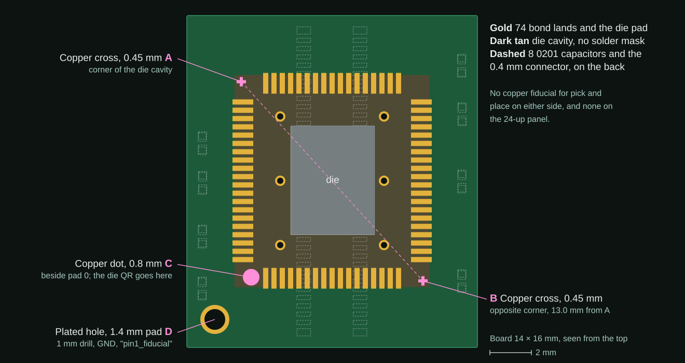
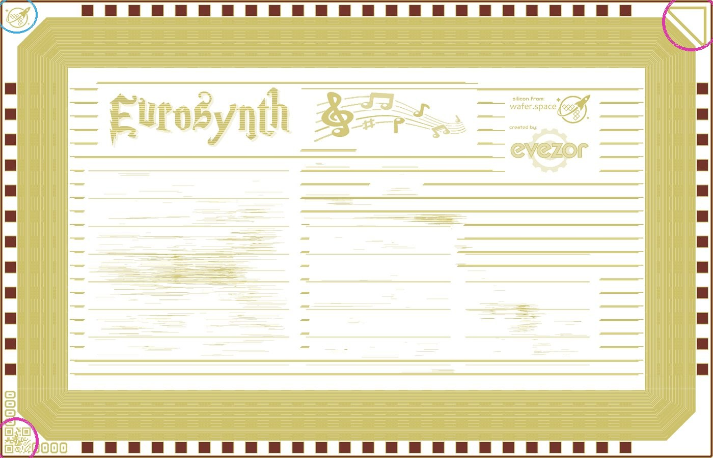
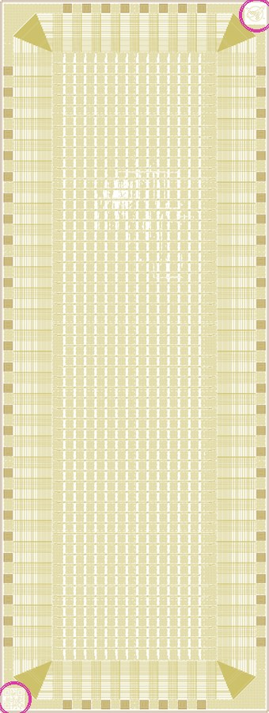
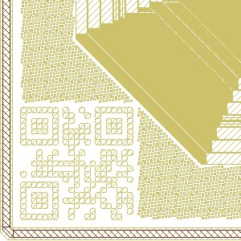
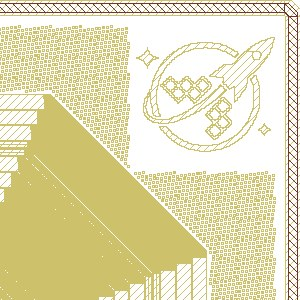

- A fiducial is a feature whose design position is known and that a camera can find. The machine finds two or three of them, works out how the real part differs from the drawing, and corrects every position it was programmed with.
- Two fiducials fix shift and turn. Three also fix uneven stretch. Put them far apart: an error in finding them grows with distance from them.
- Pick and place machines use dedicated copper dots, about 1 mm, with bare clearance around them, on the board and the panel.
- Wire bonders use two frames. They find the die by two taught "eye points" in its own artwork and correct the first bonds, and find the board to correct the second bonds. The eye points are often not dedicated marks at all.
- Run 2 is already in good shape for bonding: two copper crosses at opposite corners of the die cavity, and dies with a QR code and a different mark in opposite corners. It has no pick and place fiducials, and its SMT parts are on the back.
- In the spec (draft): one
wb:kind="fiducial", on the board or in a die group, any drawn shape, with awb:role. Section 7 has the details; four questions are still open in section 8.
1What a fiducial does
A machine is programmed in design coordinates: "put this part at x = 12.3 mm, y = 4.5 mm". But the real board never sits exactly where the drawing says. It's clamped a little off, turned a little, and the board itself may be slightly stretched by fabrication. A fiducial is a feature at a known design position that the machine's camera can find. Comparing where it was found with where the drawing put it gives a transform, and the machine applies that transform to every programmed position.
Words you'll meet
- Fiducial, fiducial mark
- A feature with a known design position that a vision system can find. On boards, usually a round copper dot.
- Global fiducial
- One of the fiducials that locate a whole board. Usually three.
- Local fiducial
- A pair placed close to one fine-pitch part, so the machine can correct for that small area just before placing it.
- Panel fiducial
- On the rails of a panel of boards. The machine finds these first for a rough fit, then each board's own for a fine one.
- Eye point, reference point
- The wire bonder's word. A region of the die's own artwork, taught once, that the bonder finds on every unit. Two per die.
- PRS, pattern recognition
- The bonder's vision system. It compares what it sees with a stored image and reports where the best match is and how good it is.
- Teach
- Showing the machine a reference unit once, by framing each eye point or fiducial in a window, so it stores the pictures and positions.
- Frame, reference system
- A coordinate system that one set of fiducials locates. A bonded board has two: the die's and the board's.
- Similarity, affine
- Kinds of fit. A similarity is shift, turn and one scale. An affine adds separate X and Y scale and a bit of skew.
- Assist
- When the vision score falls below a threshold, the machine stops and waits for an operator. Bad fiducials mean more assists.
2How many, and how far apart
Each fiducial gives two numbers, an X and a Y. Each kind of error you want to remove costs at least one number. OpenPnP's documentation spells out what each count buys, and commercial machines work the same way.
| Fiducials | What the machine can remove | Fit |
|---|---|---|
| 1 | Shift only. Any turn is left in, and grows with distance from the fiducial. | Translation |
| 2 | Shift, turn, and one average scale for both axes. | Similarity |
| 3 | Shift, turn, separate X and Y scale, and non-squareness. | Affine |
| 4 or more | The same as three, averaged, with something left over to judge the fit by. OpenPnP recommends at least four where possible. | Affine, least squares |
From the OpenPnP Fiducials page. Evezor's own WaferspaceAligner does the same: a similarity from two taught fiducials, an affine from three, and a fourth to check the teach.
Try it. The board below is the run 2 size, 14 × 16 mm. Push it off its drawn position, then see how far off the machine would still be at the far corner land and at the die, depending on how many fiducials it used and where they are. Arrows are magnified.
Why far apart. With two fiducials, the turn is worked out from the line between them. A camera error of e at each end tilts that line by about 2e divided by their spacing, and that tilt shows up at every bond, multiplied by the bond's distance from them. In the explorer above, with nothing but a 5 µm find error, a pair 17.0 mm apart leaves at most about 8 µm anywhere on the board. A pair 4.2 mm apart leaves up to about 29 µm, more than half a ball. Set "Close together" to see it.
3Pick and place
This is the case most people mean by "fiducials". The SMT line's machines (stencil printer, pick and place, optical inspection) all look for the same dots.
- The board comes in on a conveyor and is clamped.Clamping holds it near a known place, but only to within a fraction of a millimetre, and its edges are gripped. That's why fiducials keep away from the edge.
- A camera on the head looks down and finds the fiducials.Panel fiducials first for a rough fit, then each board's own for a precise one.
- The machine fits a transformfrom the design positions to the found ones, as in section 2.
- For each part, it picks, centres and places.The part is centred on the nozzle by a camera or sensor looking at the part itself. Fiducials don't help with that; they only say where on the board to put it.
- Before a fine-pitch part, it may check two local fiducialsand correct again for just that area.
Design rules, and how sure they are
We couldn't read the standard itself. SMEMA 3.1, the Fiducial Mark Standard, is cited everywhere but we didn't find the document. The numbers below come from articles that quote it and from board house guides, and they disagree on clearance and edge distance. Your assembler's requirement wins.
| Rule | Value | Source |
|---|---|---|
| ShapeA solid filled circle is the common default. Crosses, squares and diamonds are also used. | Solid circle | Vendor guide Atlas PCB |
| DiameterBig enough to find at the camera's magnification, small enough to fit. | 1 to 3 mm | Quotes SMEMA 3.1 Cadence |
| Common sizePanel fiducials are often larger, 1.5 to 2 mm. | 1.0 mm | Vendor guide Atlas PCB |
| Clear area around itNo copper, mask or silk, so the edge has contrast. Sources give a radius of 1, 2 or 3 times the dot's. | r to 3r | Disagree Cadence, NextPCB, Atlas PCB |
| From the board edgeClear of conveyor rails and clamps. Figures range from 4.75 mm to 7.62 mm plus the clear area, or a flat 5 mm. | ~5 to 8 mm | Disagree Cadence, Atlas PCB |
| How many, whereThree in an L, as far apart as the board allows, not symmetric, so a board loaded turned round is caught. | 3, in an L | Vendor guide Atlas PCB, Cadence |
| Local fiducialsTwo, at opposite corners of a fine-pitch part. Thresholds vary by house; ask before adding them. | 2 per part | Vendor guide Atlas PCB, JLCPCB |
| Surface finishFlat and evenly reflective. Bare copper with OSP or ENIG are good; HASL leaves a solder dome that differs from board to board. | Flat | Vendor guide Atlas PCB |
In KiCad
KiCad has a pad fabrication property with the values Fiducial, global to board and Fiducial, local to footprint. It changes nothing in the editor; it's written into the Gerber files as an attribute, so the board and assembly houses can tell which copper is a fiducial (Jean-Pierre Charras, kicad-developers, January 2020). The standard library has ready-made fiducial footprints. Copper drawn as a graphic rather than a pad, like run 2's crosses, doesn't carry the property.
4Die attach
A die bonder is a pick and place machine for bare dies. It has to locate two things: the board, from fiducials or other copper near the die site, and the die, from features in its own artwork, often its corners or alignment marks. It then places the die so the two line up. Research die bonders quote placement accuracy of a few µm or better; Finetech states 2.0 µm at 3σ for its FINEPLACER femtoblu, a vendor figure measured their way.
By hand, the same job is done by eye. Our bonding diagrams already carry the instruction: "Align die QR code with copper circle next to pad 0", in English and Chinese. That copper circle is a fiducial for people: it fixes the die's orientation, not its position to the µm.
5Wire bonders
An automatic wire bonder is programmed once, on a reference unit, and then bonds hundreds of units that each differ slightly. Its fiducials work the same way as a pick and place machine's, with two differences: there are two things to find, and the die's "fiducials" are usually just recognisable parts of its artwork.
- Teach, once per design.On a reference unit, the operator frames two eye points on the die in a teach window, and the bond positions. The bonder stores the images and the positions relative to the eye points. Kulicke & Soffa describe the stored image being scored by normalised grey-scale correlation or edge matching.
- Find the die, on every unit.The bonder looks near where each eye point should be, finds the best match, and fits the die frame from the two. "Once the pattern recognition system locates the two eye points, the bonder is able to transform the bond locations" (Levine).
- Find the leads or lands.For fine pitch lead frames, a video lead locator finds each lead. On a board, the substrate is found the same way from its own reference features. Our sources describe lead frames; that the board side works the same way is our inference.
- Bond.First bonds go to transformed die positions, second bonds to transformed board positions. If the score falls below the threshold, the machine stops for an assist. One patent describes falling back to reference bond pads when die recognition fails.
What makes a good eye point
Unique in its search window. A pad in a row of identical pads matches in several places. A logo, QR code or corner shape matches in one.
The same on every die. K&S's patent leaves out regions whose colour or texture varies, and masks pad centres that carry probe marks.
Far apart, for the reason in section 2. Diagonally opposite corners are the usual choice.
Different from each other. A Texas Instruments patent puts top-metal marks in opposite corners and turns the second one 90° so the two corners can't be confused, which also tells a die turned 180°. Its marks are 50 to 75 µm.
Eye points from design data. Normally eye points are taught at the machine. Kulicke & Soffa patented a "visionless teach": building them from the die's CAD data in an offline tool and only confirming them on a sample unit. We already have the GDS, so a file that names good eye points in die coordinates is exactly the input that kind of tool wants.
What we still don't know: how far from its expected place a bonder will search (its capture range), how well it finds a feature (its find error), and how big its field of view is. The checker's placement analysis in the spec needs the first; section 2's arithmetic needs the second. Both are questions for a bonding house, and we haven't got one yet.
6What run 2 already has
Read straight from run-2/1x1-cob/1x1-mezzanine.kicad_pcb in chip-on-board-wire-bonded-pcbs. The die is a stand-in drawn around the footprint's reference pads.

make_fiducial_figures.py in this folder. A and B are the padring footprint's copper crosses, inside the cavity's mask opening. C is the same footprint's copper circle. D is the WaferSpace:pin1_fiducial footprint.| Mark | What it is | Good for | Notes |
|---|---|---|---|
| A, B | 0.45 mm copper crosses, 0.15 mm arms, in opposite corners of the die cavity, 13.0 mm apart | Die attach and bonder board frame | Close to the die and far apart, which is ideal. They're graphics, not pads, so KiCad's fiducial property can't be set on them. Same shape and nearly point-symmetric about the cavity, so on their own they can't tell 0° from 180°. |
| C | 0.8 mm copper dot beside pad 0 | People: orientation | The die's QR code goes toward it. Below the 1 mm usually asked for pick and place. |
| D | 1.4 mm plated hole, 1 mm drill, on GND, called pin1_fiducial | People: pin 1 | A hole, not a solid copper dot, so it isn't a fiducial in the SMEMA sense. Seen from both sides. |
| none | Pick and place fiducials | All eight 0201 capacitors and the 0.4 mm pitch, 70-pin connector are on the back. Neither side has a fiducial pad, and the 24-up panel has none on its rails. The assembler may add their own or use other copper; that's a question for them. |
The dies
Both wafer.space dies we looked at have a QR code in the bottom-left corner. Each also has a different-looking mark in the opposite corner, but which mark varies: eurosynth has a triangle top right and a rocket top left; HZ80 has the rocket top right. A QR code and the opposite corner's mark make the pair the TI patent describes: far apart, and impossible to confuse.




Renders of top metal from the GDS, not photos. Through a bonder's camera, under glass, contrast will differ; whether these read well is something to try on a real die. A QR that encodes something different on each design is fine, since a bonder is taught once per design anyway.
| Step | Side | What it can find on run 2 |
|---|---|---|
| 1. SMT, usually first because the die can't go through reflow | Back | No fiducial. Ask the assembler. |
| 2. Die attach | Front | Crosses A and B by machine, or dot C by eye. The die by its corners or QR. |
| 3. Wire bond | Front | Die frame: QR plus the far-corner mark. Board frame: crosses A and B, or the lands themselves. |
7Fiducials in wirebond.svg
Now in the spec, as a draft. This section was a proposal and has gone into SPEC.md under "Fiducials (draft)". wbx.py reads, writes and checks it, and the example in examples/ carries board fiducials and two die eye points. Before this, the spec had only round board fiducials, used as GD&T datums.
What the spec says
| Part | Rule | Why |
|---|---|---|
| Kind | Keep one wb:kind="fiducial" | Board dots, board crosses and die eye points all do the same job: a known point in a frame. |
| Frame | Set by where it sits. Inside a die group, it's in that die's frame and in GDS coordinates, like a pad. Outside, it's on the board. | No new attribute, and it follows the die when the die moves, which is exactly what the checker's placement analysis needs. |
| Shape | circle, rect, path, or a g of shapes | Crosses are paths. A QR eye point is a group, outlined from the GDS so a person can see what to teach. |
| Point | The centre of the drawn shape's bounding box | Rule 1: the point comes from what's drawn. For a circle it's the centre; for a cross or QR, its middle. |
| Role | New wb:role: align, the default, or orient | align: a machine may fit to it. orient: a mark for people, such as dot C or hole D; no tool fits to it. |
| Datum | wb:datum as now, optional | One fiducial can be both a datum and an alignment point. |
| Left to KiCad | Mask clearance, global or local, the back side | Pick and place reads Gerbers and position files, not our file. KiCad already has a fiducial property for that. |
Run 2 in that form, board coordinates in µm from the board's top-left corner, and the eurosynth die's eye points in GDS coordinates. The die numbers are illustrative; real ones would come from the GDS. The repo's own example, with checked numbers, is examples/example.wb.svg.
<!-- board frame: run 2 crosses A and B -->
<path wb:kind="fiducial" wb:name="A" wb:role="align" class="cu"
d="M2550,2965 h150 v150 h150 v150 h-150 v150 h-150 v-150 h-150 v-150 h150 z"/>
<path wb:kind="fiducial" wb:name="B" wb:role="align" class="cu"
d="M11300,12565 h150 v150 h150 v150 h-150 v150 h-150 v-150 h-150 v-150 h150 z"/>
<!-- for people: dot C and hole D -->
<circle wb:kind="fiducial" wb:role="orient" wb:name="C" cx="3100" cy="12615" r="400" class="cu"/>
<circle wb:kind="fiducial" wb:role="orient" wb:name="D" cx="1350" cy="14650" r="700" class="cu"/>
<g transform="translate(5034 9231) scale(1 -1)" wb:kind="die" wb:name="U1" ...>
<!-- die frame, GDS coordinates: eurosynth's QR and far-corner triangle -->
<g wb:kind="fiducial" wb:name="QR" wb:role="align">
<rect x="28" y="30" width="143" height="143" class="mark"/>
</g>
<path wb:kind="fiducial" wb:name="TRI" wb:role="align" class="mark"
d="M3700,2500 L3900,2500 L3900,2300 Z"/>
...pads...
</g>What the checker does
wbx.py check runs these. Only F2 and F3 make a file invalid; the rest print as WARN or NOTE lines, or appear in the JSON summary. F3's clear distance is wb:rule-fid-clear on the root, a placeholder of ours.
| Key | Check | Level |
|---|---|---|
| F1 | Each die and the board has at least two align fiducials.Otherwise the bonding house picks its own; say so rather than fail. | Warn |
| F2 | A die fiducial lies inside its die outline; a board fiducial inside the board and not under a die or its attach fillet. | Error |
| F3 | No land or wire, in plan, covers a board fiducial or comes within a clear margin of it.Margin is a placeholder; we have no bonder source for it. | Error |
| F4 | Report the lever ratio: the farthest bond's distance from the pair over the pair's spacing.Times the find error, it's the error at that bond. No limit until we know a bonder's find error. | Info |
| F5 | A die's two eye points have the same shape and sit point-symmetric about its centre.Then a die turned 180° looks the same to them. | Warn |
| F6 | An eye point overlaps a pad that gets a ball.Fine for the first find, but the ball hides it from inspection or a re-teach. | Info |
Getting them in and out
- KiCad: the example board now has F1, F2 and P1 as fiducial footprints. F1 and F2 carry KiCad's
pad_prop_fiducial_glob, which KiCad keeps on re-save and writes into the Gerbers. The app skips fiducial pads when it looks for lands. No importer reads them into a.wb.svgyet. Graphics like run 2's crosses don't carry the property, so either the padring footprint makes them pads, or the app lets someone pick them. - GDS: there's no fiducial layer. The example's die has its eye points in top metal, named by labels. Real wafer.space QR and corner marks are unlabelled template artwork; the app could find them by cell name if those names are stable (not checked), or let someone draw a box round them.
- Out:
wbx.py exportwrites<base>.fiducials.csv: frame, name, role, datum and the reference point in the bond list's coordinates, so the bonding house sees what we'd suggest teaching. The drawn file shows the same thing to a person. The app's own.wb.svgexport doesn't write fiducials yet.
8Still to decide
eyepoint kind for the die? Decided: one kindOne kind keeps the checker and importers simple. A separate word would match bonder vocabulary.
The other choice is a small drawn crosshair inside each fiducial group, which is more explicit but one more thing to keep in step.
align and orient enough, or should a fiducial say which step uses it (attach, bond)? Decided: role only, for nowAdd per-step use when a bonding house asks for it.
A change in chip-on-board-wire-bonded-pcbs, not this repo. It would make them importable and visible to the board house as fiducials.
A question for whoever assembles run 2. Outside wirebond.svg, but nobody has asked yet.
For example wb:match="U1.QR" on dot C. The bonding diagrams already print this; as data, the checker could catch a die placed turned round.
The QR and whatever mark is in the opposite corner, when one is found; otherwise two corner pads, with an F5 warning.
9Sources
Read in November 2026. Patents describe what a company built or claimed, not necessarily what today's machines do.
- OpenPnP wiki, Fiducials. What 2, 3 and 4 or more fiducials let the machine estimate; panel fiducials first, then board.
- Cadence, PCB fiducial guidelines, 2024. Quotes SMEMA 3.1 Diameter 1 to 3 mm, clearance, edge distance. Read through search excerpts; the page didn't load in full.
- Atlas PCB, Fiducial mark design and placement. Vendor guide 1 mm dot, 2 mm clear area, 5 mm from edge, three in an L, local pairs, panel sizes, finish.
- NextPCB, Guide to PCB fiducial marks. Vendor guide Clear area of 1, 2 or 3 times the radius.
- JLCPCB, Fiducial marks. Vendor guide Local fiducials in diagonal pairs for fine-pitch parts.
- Jean-Pierre Charras, kicad-developers, 6 January 2020. The pad fabrication property, including fiducial global and local, written as Gerber attributes.
- Lee Levine, Wire bonding, Semiconductor Digest. Two taught eye points per die; video lead locator for fine-pitch leads.
- US 8,100,317, Kulicke & Soffa, 2012. What an eye point is, how it's taught and scored, and visionless teach from CAD data.
- US 6,465,898, Texas Instruments, 2002. Bonding alignment marks in opposite die corners, the second turned 90°, 50 to 75 µm.
- US 5,119,436. The bonder's pattern recognition relocating each taught bond point on production parts.
- US 7,817,846. Correcting bond coordinates from reference bond pads when die recognition fails.
- Finetech, FINEPLACER product pages. Vendor claim Die bonder accuracy figures.
- chip-on-board-wire-bonded-pcbs,
run-2/1x1-cob/1x1-mezzanine.kicad_pcband its 24-up panel; ws-bonding-diagrams,make_bonding_diagrams.pyfor the QR alignment callouts; GDS renders of eurosynth and HZ80.
Looked for and not found: the SMEMA 3.1 document itself, an IPC fiducial rule we could read directly, and any bonder maker's published capture range or find error.